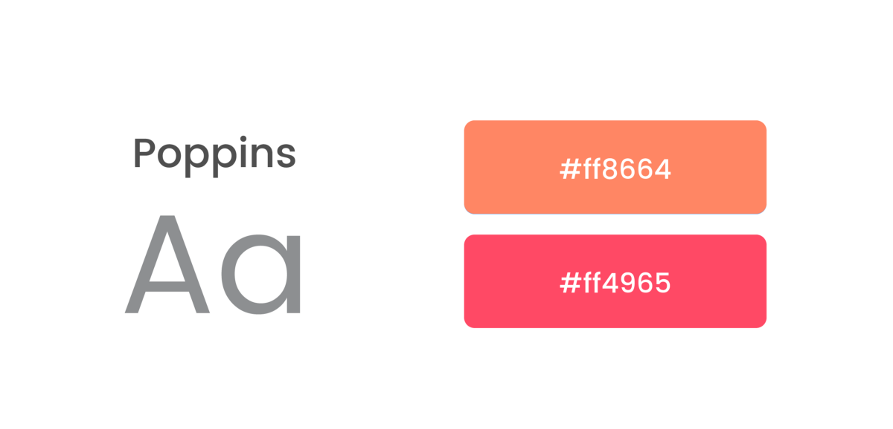

Simplifying Attendance process

Attendance App
Concept Project
Attendance is one of the important factors to check the regularity of students and employees in most of the institutes. The record helps to assess their sincerity towards work and accordingly reflects their performance.
Most of the institutes use conventional method of marking attendance in a register by calling out name of each student.
While some use biometric system (A biometric system is a technological system that uses bio-information to identify a person). Biometric system is an effective method for taking attendance as it helps in proper utilization of the lecture time.
I am a sophomore in Indian Institute of Technology, Roorkee. I have observed and analysed both the attendance systems thoroughly. Both of the methods have their own pros and cons.
Improper or no knowledge of one’s own capabilities, limits and progress is one of the main reason why generally people quit workout in between.
The Problem
For Professors
The biometric system is difficult to set up, since registration of bio-information ( example-fingerprint ) of thousands of students is not an easy task and it is quite expensive also which every institute might not afford. On the other hand, marking attendance on a register is an easy task with no such requirement of heavy setups but it does not provide any digital data that can be easily exported for further use.For Students
Most of the educational institutes have some minimum attendance rule and without this minimum attendance, students are not allowed to sit in examination and will experience an attendance back in that particular course. For IIT Roorkee, this minimum attendance is 75%.Having proper knowledge of one’s attendance can help them in avoiding a semester back.
The basic idea was to create a link between students and professors for the betterment of both.
Goals
- To design a new method of taking attendance which will ease professors in taking attendance and also provide a digital record of the attendance.
- To provide a digital record easily accessible to the students which will help in increasing awareness and also help them to take accountable decisions.
The Solution
-
A mobile application for both professors and students that will make the process of attendance more clear, simple and better.
- Digital attendance can be recorded by using a mobile application which will be used by the professors.
- A similar application would help students to have a proper track of their attendance.
Attendance App for Professors
Basic Sketches

I usually prefer wireframing on pen and paper and then on illustrator and did the same for this app. Main goal of the professor app is to make it easier for professors to take attendance in minimum number of steps.
During the design process, my goal was to create a familiar look and feel as of the conventional method. I never wanted to create a completely new method of attendance, just digitize the conventional pen and register method.
Wireframes
Branding
Most of the users are professors in the age of 35–65 years. They are not used to bright colors and gradients. So subtle colors on white base are used.
Screens
I focused on creating a quick and simple interaction which also resembles conventional pen and paper method. Selecting a few absent students is always an easy task and that’s what professors generally practice in conventional method and thats why I designed the app on a similar framework.

Attendance App for Students
Overview
The main aim of the application is to provide a proper detailed view of one’s attendance and information about days they were present and absent. It also calculates and displays the number of leaves a student can afford before facing a back.Basic Sketches
Wireframes
App for students although seemed like a simple task but finding out ways to increase the engagement of the students was challenging. I imagined the app to have an easy to use and fast interface like that of a dashboard showing attendance records of various courses and displaying the detailed information on touch.
Branding

Most of the users are teenage students so energetic and warm colors are used.
Most of the users are teenage students so energetic and warm colors are used.
Logo
Design
For the Students App, I used vibrant gradients to enhance the UI and make it more appealing to students
Summing Up
It took me about a month to design both the apps, starting from research to final screens. Designing this app was really fun and it also helped me in improving my UX flow, UI and Interaction design skills. See more of my works


Say Hello
I am available for freelance projects, remote work or just discussing design, feel free to ping me at
 kunalsatpal1@gmail.com
kunalsatpal1@gmail.com